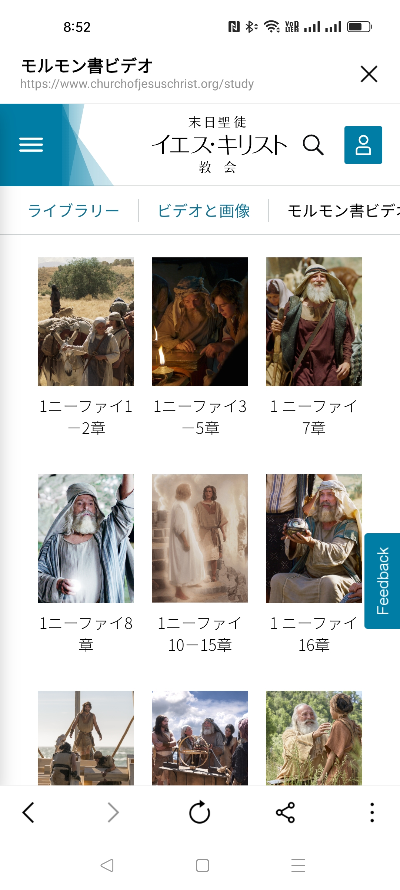

第9週 「邪悪な時代に義にかなった生き方」と「宗教の自由」
「(モルモン書は)謙遜にキリストに従う者たちが，今日の悪魔の企てや戦略，その教えに対抗できるよう力を与えるものです。」
エズラ・タフト・ベンソン大管長 (「モルモン経は神のみ言葉」『 聖徒の道』1988年5月号，3）
「モルモン書は主の教えを明らかにすると同時に，サタンの策略を暴き出します。」
ラッセル・M・ネルソン大管長（「モルモン書―この書物なしの人生とは」『リアホナ』2017年11月号，62。2ニーファイ26－33章）

「わたしは兄弟たちに言った。モルモン書はこの世で最も正確な書物であり，
わたしたちの宗教のかなめ石である。そして，人はその教えを守ることにより，
ほかのどの書物にも増して神に近づくことができる。
（モルモン書の序文，6段落）」
@オンライン (Zoom)
https://us02web.zoom.us/j/84905838829?pwd=alpTNnZyOU9JejBoa2FGL01lZG9HUT09
ミーティングID: 849 0583 8829
パスコード: kanagawa
第9週 「邪悪な時代に義にかなった生き方」と「宗教の自由」
「(モルモン書は)謙遜にキリストに従う者たちが，今日の悪魔の企てや戦略，その教えに対抗できるよう力を与えるものです。」
エズラ・タフト・ベンソン大管長 (「モルモン経は神のみ言葉」『 聖徒の道』1988年5月号，3）
「モルモン書は主の教えを明らかにすると同時に，サタンの策略を暴き出します。」
ラッセル・M・ネルソン大管長（「モルモン書―この書物なしの人生とは」『リアホナ』2017年11月号，62。2ニーファイ26－33章）
●開会の讃美歌：「11 感謝を神に捧げん」
2. 黒雲迫り来て 平和を乱すとき
明るき希望あり 救い近きを知る
主に疑いはなし 日々に証あかしを持つ
シオンに逆らう者 ついに打ち倒されん
| 日付 | 単元 | 課 | 読書課題 |
| 2023年6月14日 第10週 /14 |
現代の霊的な危険を暴く | 第19課 邪悪な時代に義にかなった生き方をする | ●ヒラマン3：33－35 ●モルモン1：1－2，15 モロナイ9：25－26 |
| 第20課 宗教の自由の祝福 | ●モーサヤ27：1－4 ●アルマ30：7－9，11 ●アルマ46：11－13，19－20 |
||
| 欠席の場合の補習課題 | 読書課題から印象に残った箇所を説明する文章を送信してください。 |
◎最近の話題 Church News から =＞ 付録 １ 年齢の祝福
◎ビデオ 「モルモン書―この書物なしの人生とは」(15:01)
ラッセル・M・ネルソン大管長
『リアホナ』2017年11月号，62。2ニーファイ26－33章）
この6か月間，わたしは十二使徒定員会の兄弟たち，チリの宣教師，アルゼンチンで一堂に会した伝道部会長とその夫人など，様々なグループの人々に，今日わたしが皆さんに考えるように強く勧める3つの関連性のある質問をしてきました。
第1に，モルモン書がなかったとしたら，どんな人生でしょう。第2に，モルモン書なしに知り得なかっただろうことは何でしょう。第3に，モルモン書なしに得られなかっただろうものは何でしょう。
心からの熱意ある回答がありました。その中からほんの少しだけ紹介しましょう
=========== (第19課 1) 福音に従って迫害に遭うとき，どのようにすれば主に忠実でいられるだろうか
Q. ほかの教会員の不親切な言葉や人を傷つけるような行為を受けたとき，あるいはそれらを見聞きしたとき、どのように応じましたか。そのような迫害に遭うときどのように対処しますか？
ヒラマン3：33－35
33 さばきつかさの統治第五十一年も，教会の中に入り込んできた高慢を別にすれば，平和であった。教会の中に入り込んできたと言ったが，神の教会の中ではなく，神の教会に属していると公言する人々の心の中に入り込んできたのである。
34 そして彼らは高慢になり，多くの兄弟たちを迫害するようになった。これは大きな悪であり，このために彼らよりも謙遜な人々はひどい迫害を受け，多くの苦難を踏み越えなければならなかった。
35 それでも彼かれらは，しばしば断食して祈り，ますます謙遜になり，ますますキリストを信じる信仰を確固としたものにしたので，喜びと慰めで満たされ，まことに清められ，心の聖めを受けた。この聖めは，彼らが心を神に従わせたために受けたのである。
1 さて，わたしモルモンは，自分がこれまでに見聞きしたことを記録して，これをモルモン書と呼よぶ。
2 アマロンは数々の記録を主に託たくして隠したころ，わたしのところにやって来きた。（当時わたしは十歳くらいで，わたしの民の教育方法に従がってかなり教育を受け始めていた。）そして，アマロンはわたしに言った。「わたしはあなたがまじめな子供で，観察が鋭いことを知っている。
15 わたしは十五歳で，多少まじめな心の持ち主であったので，主の訪れを受け，イエスの慈しみを味わって知った。
25 わが子よ，キリストに忠実でありなさい。わたしの書いたことを悲しんで，打ちひしがれて死ぬことのないように。キリストに支えられて，キリストの苦しみと死と，キリストがわたしたちの先祖に御自分の体を示めされたことと，キリストの憐みと寛容と，キリストの栄光と永遠の命とを願う望みが，とこしえにあなたの心の中にとどまるように。
26 天の高い所にある王座に着いておられる父なる神の恵みと，また万物が従うまで神の右に座する主イエス・キリストの恵みが，とこしえにあなたとともにあるように。アーメン。」
罪深いに世にあっても救い主に思いを集中させる力
ジョイ・D・ジョーンズ会長
1 さて，不信仰な者たちが教会員に加える迫害が非常にひどくなったので，教会員はつぶやき，その件について指導者たちに訴ったえ始めた。そこで，指導者たちはアルマに訴ったえた。アルマはその件を王であるモーサヤの前に持ち出し，モーサヤは祭司たちに意見を求めた。
2 そしてモーサヤ王は，不信者は神の教会に属している者を迫害してはならないと，周辺の全地に布告を出した。
3 また，すべての教会に次のような厳しい命令が出だされた。すなわち，教会の中に迫害があってはならない。すべての者は平等でなければならない。
4 高慢あるいは傲慢になって，平和を乱すようなことがあってはならない。すべての者は隣人を自分自身のように尊ばなければならない。また，自分自身の手で働いて生活の糧を得なければならない。
7 このときには，人の信条を禁止する法律はなかった。人々を不平等な立場に置く法律があることは，まったく神の戒めに反していたからである。
8 聖文には，「あなたがたの仕える者を，今日，選びなさい」とある。
9 そこで，もし人が神に仕えたいと思うならば，神に仕える特権があった。いや，その人が神を信じるならば，神に仕える特権があった。しかし，たとえ人が神を信じなくても，その人を罰する法律はなかった。
10 しかし，人殺しをすれば，その人は死刑に処せられた。また，略奪する者も罰っせられ，盗む者も罰っせられ，姦淫を行う者も罰っせられた。まことに，すべてこのような悪事を行う者は罰っせられた。
11 人々は罪科に応じて裁かれるという法律があったからである。にもかかわらず，人の信教に反対する法律はなかった。したがって，人は自分の行なった犯罪についてだけ罰せられたので，すべての人が平等な立場にあった。
Q. コリホルにはなぜそのような考え方を広める権利があったのでしょうか。
コリホルが神を信じないという彼の考えを述べる権利があったのと同様に，アルマも天の御父とイエス・キリストが生きておられることを証する自由がありました。アルマの言葉を信じないことを選択したコリホルは，神からのしるしを要求して，ものが言えなくなってしまいました。このことが広く知れ渡ると，コリホルの教えを信じていた人々は，自分の間違いを悟って，「再び主に帰依」しました（58節）。
29 さて，大祭司と大さばきつかさは，コリホルの心がかたくなであるのを見ると，また彼が神さえもののしろうとするのを見ると，彼の言葉にまったく応じることなく，彼を縛らせて役人の手に引き渡たし，ゼラヘムラの地へ送くった。それは，彼をアルマと全地の総督である大さばきつかさの前に引き出だすためであった。
30 さてコリホルは，アルマと大さばきつかさの前に引き出されても，ギデオンの地で語ったように語り，不敬な言葉を吐き続けた。
31 また彼は，アルマの前で大言壮語し，祭司たちと教師たちをののしり，彼らは民の労苦によって飽きるほど食べるために先祖の愚かな言い伝えで民を惑わしていると言って彼らを非難した。
32 そこで，アルマは彼に言った。「あなたは我々が民の労苦で飽きるほど食べるようなことはしていないことを知っている。見よ，わたしは，民に神の御言葉を告げ知らせるために何度も国の方々を旅したが，さばきつかさの統治の初めから今に至るまで，自分の手で働らいて生活の糧(かて)を得てきた。
33 またわたしは，教会で多くの務めを果してきたが，これまで自分の働きに対して一セナインも報酬を受けたことはなかった。わたしの同胞も，さばきつかさの職を務める者のほかは皆そうである。そして，さばきつかさの職にある者も，法律に定められたとおり，務めた時間の分の報酬を受けるだけである。
34 では，もし教会での働らきに対して何も報酬を受けないとすれば，我々は，真理を告げ知らせて同胞の喜ぶのを見て喜びとするほかに，どのような得があって教会で働らくのであろうか。
35 また，あなた自身，我々が何の報酬も受けていないことを知っているのに，どうして我々が利を得るためにこの民に教えを説いていると言うのか。また，あなたは，この民の心の中にこのような喜びが満ちているのは，我々がこの民を欺むいているためだとでも思っているのか。」
36 するとコリホルはアルマに，「そのとおり」と答えた。
37 そこで，アルマは彼に，「あなたは神がましますことを信じるか」と尋ずねた。
38 すると彼は，「いや」と答えた。
39 また，アルマは彼に言った。「あなたは神がましますことをまたもや否定し，キリストも否定するのか。見よ，あなたに言う。わたしは神のましますことと，将来キリストが来られることを知っている。
40 あなたは何の証拠があって神は実在せず，またキリストは来られないと言うのか。あなたの言葉のほかには何一つ証拠がないと，わたしはあなたに告げる。
41 しかし見よ，わたしはすべての事物をもって，これらのことが真実であると証しする。また，これらのことが真実であることを証しするすべての事物があなたにもあるのである。それでもあなたは，これらのことを否定するつもりか。あなたはこれらのことが真実であることを信じるか。
42 見よ，わたしは，あなたが信じていることを知っている。ところがあなたは偽りを言う霊に取つかれている。あなたが自分に神の御霊が宿らないように遠ざけてしまったので，悪魔があなたを支配する力を持ったのである。そして，悪魔は神の子たちを滅ぼすために様々な策略を働らかせ，あなたを方々に行かせるのである。」
43 すると，コリホルはアルマに，「もしあなたが，神のいることを確信させるしるしをわたしに見せ，まことに，神に力のあることを示してくれるなら，あなたの言葉が真実であることを納得するだろう」と言った。
44 しかし，アルマは彼に言った。「あなたはすでに数々のしるしを十分に持っている。あなたは神を試みようとするのか。あなたの同胞(はらから)であるこのすべての人の証しと，すべての聖なる預言者たちの証しがあるのに，あなたは『しるしを見せてくれ』と言うのか。あなたの前に聖文が置いてある。まことに，万物は神がましますことを示している。まことに，大地も，大地の面にある万物も，大地の運動も，また各々の整然と運行しているすべての惑星も，それらのすべてが至高全権の創造主がましますことを証ししている。
45 それでも，あなたは方々を歩き回ってこの民の心を惑わし，神は実在しないと彼らに証しするつもりか。また，あなたはそれでも，このように証しするすべてのものに逆らって否定するつもりか。」するとコリホルは，「そのとおり。しるしを見せてくれないかぎり，わたしは否定する」と答えた。
46 そこでアルマは彼に言った。「まことに，あなたの心がかたくなであって，なおも真理の霊に逆らって霊の滅びを招こうとしていることを，見よ，わたしは嘆げかわしく思う。
47 しかし見よ，あなたが仲立ちになって，あなたの偽りとへつらいの言葉により多くの人を滅びに至せるよりは，むしろあなた自身が滅びる方がよい。したがって，もしあなたがもう一度否定するならば，まことに神はあなたを打たれるであろう。あなたは物が言えなくなり，二度と口を開くことができず，もはやこの民を欺むくことができなくなるであろう。」
48 ところが，コリホルはアルマに，「わたしは神の存在を否定はしないが，神がいるとは信じない。だから，神がいることはあなたたちには分らないと言っているのだ。しるしを見せてくれなければ，わたしは信じない」と言った。
49 そこで，アルマは彼に，「あなたにしるしを示めそう。あなたはわたしの言うとおり物が言えなくなるというのがそれである。わたしは神の御名によって言う。あなたは物が言えなくなり，今後二度と口を利くことができないであろう」と言った。
50 アルマがこの言葉を言い終えると，アルマの言葉のように，コリホルは物が言えなくなり，語ることができなくなった。
51 さて，大さばきつかさはこれを見ると，手を差し伸べてコリホルに書き示めし，「あなたは神の力を認めるか。あなたはだれにしるしを示すようにアルマに求めたのか。あなたにしるしを示すために，彼がほかの人々を苦しめることを願ったか。見よ，彼はもうすでにあなたにしるしを示した。それでもなおあなたは反論するか」と告げた。
52 するとコリホルも，手を差し伸べて書き示し，言った。「わたしは今，話すことができないので，物が言えなくなったことを認めます。また，神の力によるのでなければ，わたしにこのようなことが決っして起きないことも，わたしは知っています。また，わたしは神がましますことを前から知っていました。
53 しかし見よ，悪魔がわたしを欺むいたのです。悪魔は天使の姿でわたしに現われて，『この民は皆，未知の神を求めて迷っているので，行って改心させよ』と言いました。また悪魔はわたしに，『神はいない』と言い，わたしが言うべきことも教えてくれました。そこで，わたしは悪魔の言葉を教えてきました。わたしは，悪魔の言葉が肉の思いに快ろよいので，それを教えてきたのです。また，わたしはそれを教えてついに大きな成功を収めたので，自分でもそれが真実だとまったく信じるようになりました。このようなわけで，わたしは真理に逆らい，とうとうこの大きなのろいを招いてしまいました。」
54 さて，コリホルはこのように言うと，そののろいが取り去られるように神に祈ってほしいとアルマに懇願した。
55 しかし，アルマは彼に，「こののろいがあなたから取り去られると，あなたはまた，この民の心を惑わすようになるであろう。だから，主が望まれるとおりになるがよい」と言った。
56 そして，そののろいはコリホルから取り去られなかった。そして，彼は追い出され，食物を請うて家々を巡るようになった。
57 一方，コリホルの身に起ったことは，すぐ全地に告げ知らされた。まことに，大さばきつかさが国のすべての人に布告を出し，コリホルの言葉を信じた人々に，同じ裁きを受けることのないように速やかに悔い改めなければならないと告げたのである。
58 そこで彼らは皆，コリホルの悪事を認め，再び主に帰依するようになった。そして，これによってコリホルに倣った罪悪は後を絶たった。コリホルは家々を巡り，食物を請うて命をつないだ。
●預言者ジョセフ・スミス
「わたしは自分が長老派，バプテスト，あるいは他の宗派の善良な人の権利を守るためにも〔教会員に対するのと〕同じように命を差し出す用意ができていることを，天の前にあえて宣言します。末日聖徒の権利を踏みにじる考え方は，ローマカトリックや，あるいは信者が少なく，自分たちを守る力を持たない宗派の権利をも踏みにじるものです。（『歴代大管長の教え—ジョセフ・スミス』345）」
「わたしたちは，自分の良心の命じるとおりに全能の神を礼拝する特権があると主張し，またすべての人に同じ特権を認める。彼らがどのように，どこで，何を礼拝しようと，わたしたちはそれを妨げない。」（信仰箇条1：11）
=========== (第20課 3) モロナイと自由の旗
Q. 総司令官モロナイが自由を脅かすものから民を守るためにしたことは？
11 さて，ニーファイ人の軍隊の総司令官であったモロナイは，これらの離反について聞き，アマリキヤのことを怒かった。
12 そして，自分の衣を裂いて，その一片を取り，それに「我々の神と宗教，自由，平和，妻子のために」と書いて，竿の先にしっかりとくくり付けた。
13 それから，彼れは自分のかぶとと胸当と盾をしっかりと身に着け，よろいを腰にまとい，先端に裂いた衣を付けた竿を取って（彼はそれを自由の旗と呼んだ），地にひれ伏し，そしてクリスチャンの一団が残ってその地を所有しているかぎり，自分の同胞に自由の祝福をとどめてくださるようにと，熱烈に神に祈った。
19 モロナイはこの言葉を述べてから，民の中に出て行き，裂いた衣の一片に書いた文字がすべての人に見えるように，その裂いた衣を空中で打ち振り，大声で叫けんで言った。
20 「見よ，この地にこの旗を立てて守ろうとする者たちは皆，主の力をもって出て来なさい。そして，主なる神から祝福を頂だけるように，自分たちの権利と宗教を守るという聖約を交そうではないか。
●ロバート・D・ヘイルズ長老
「イエス・キリストの弟子として，わたしたちには志を同じくする信仰心のある人々と手を取り合って，正しいことのために声を上げる責任があります。……
……わたしたちにはこれらの神聖な自由と権利をわたしたち自身と子孫のために守る責任があります。では，わたしたちに何ができるでしょうか。
第1に，情報を得ることができます。信教の自由に影響を与える可能性のある地域社会の問題に注意を向けましょう。
第2に，個々の立場で，同じように信教の自由に関心を寄せる人々と手を取り合って，信教の自由を守るために一緒に働きましょう。
第3に，言葉と行いにおいて，自分の信条の模範となる生活を送ってください。宗教について語るよりも，その教えに沿って生活する方がはるかに重要です。
救い主の再臨は近づいています。この大義にあって遅れを取らないようにしましょう。〔自由の旗を掲げた〕司令官モロナイを思い出してください。〔アルマ46：12〕……民の反応を忘れないようにしましょう。彼らは選択の自由を用いて，「走ってやって来て」，行動するという聖約を交わしました〔アルマ46：21〕。」
（「選択の自由を保ち，信教の自由を守る」112，113）

教会の声明
●末日聖徒イエス・キリスト教会の宗教の自由のための活動を平和的に行うことに関する声明。
「法律によって信教の自由が制限されているところでは，末日聖徒はその法律に従うことが正しいと信じますが，その一方で，それぞれの管轄区域または各国で有効とされる法律的な手段を用い，自分たちの基本的権利の保護を求める努力も行います。
（“Religious Freedom: The Basics” ）
●News Room: "Religious Freedom (宗教の自由)" (以下は、Google翻訳。公式の日本語訳のページはないようです。)
「宗教の自由は、すべての人々の良心を守る基本的人権です。それは私たちが深く信じていることに基づいて考え、表現し、行動することを可能にします。しかし、世界中で、そして米国でも、この自由は侵食されつつあります。教会、宗教団体、個人は、公共の場に参加したり、自分の信念を表明したり、社会で奉仕したりする際に、ますます制限に直面しています。しかし，信教の自由を守り強化するために，教会員や善意のある人々ができることはたくさんあります。
信教の自由が意味するもの
信教の自由は基本的人権であり、合衆国憲法で保障される権利の中で最初のものです。それは、良心の命令に従って、自分が深く信じていることを考え、表現し、行動する権利です。
なぜ信教の自由が必要なのか
宗教の自由、あるいは良心の自由は、多様な社会の健全性にとって極めて重要です。それはさまざまな信仰や信念が繁栄することを可能にします。信教の自由は、宗教の有無にかかわらず、最も弱い立場にある人々を含むすべてのグループと個人の権利を保護します。
末日聖徒にとって信教の自由が重要な理由
末日聖徒はその教えと歴史により、信教の自由に対して特別な取り組みを行っています。200年近くにわたり、末日聖徒の指導者たちはすべての人に対する信教の自由の重要性を教えてきました。「私たちは、自らの良心の命令に従って全能の神を崇拝する特権を主張し、すべての人に同じ特権を認めます。どのように崇拝させるか、どこで、あるいは何が起こるかもしれない。」
宗教が社会にとっていかに重要であるか
宗教は社会において重要な位置を占めています。宗教団体と人々がそのプラスの影響を発揮するには、宗教を実践するための物理的、社会的、法的スペースが必要です。すべての合法的な声は公共の場で聞かれるべきです。宗教的な声も世俗的な声も沈黙させられるべきではありません。宗教は単なる個人的な崇拝ではありません。それには、社会的および道徳的問題に関する公の場での表現が含まれます。
信教の自由が私たちに求めるもの
信教の自由は権利であると同時に義務でもあります。宗教の自由と礼儀は相互に依存しており、各人の固有の尊厳に基づいた相互義務を形成します。宗教団体と宗教者は、自分の意見を合理的かつ敬意を持って表明する責任があります。
=== 付録 １ 年齢の祝福 最近のChurch News から
●「年齢の祝福 — 大管長会に関するホランド長老のエッセイ」
ジェフリー・R・ホランド長老はネルソン大管長、オークス管長、アイリング管長の成熟と判断力について語る
2023年6月1日
5月31日、教会管理棟で行われたささやかな誕生日パーティーは末日聖徒イエス・キリスト教会の歴史に名を残した。そのような環境の中で、大管長会第二顧問ヘンリー・B・アイリング管長は自身の90歳の誕生日を祝った。既に教会史上最も高齢となっている大管長会は、アイリング管長ラッセル・M・ネルソン大管長（98歳）とオークス第一顧問 90歳と、第二顧問ヘンリー・B・アイリング管長90歳とである。
「私たちは皆、彼らの多くの容赦のない広範囲にわたる任務が健康に及ぼす影響を懸念していますが、通常、若さはどんな任務にもエネルギーと活力をもたらすことを知っていますが、それにもかかわらず、90代の男性3人によるこの大管長職は確かな成果をもたらします。彼らの使命に対する特質は、前例のないものであると同時に、ある程度かけがえのないものでもあります。私は、さまざまな責任を担って働く彼らを毎日一日中観察する特権に恵まれた、ほんの一握りの人間のうちの一人です。年配の男性、特にこれらの年配の男性のリーダーシップについて私が学んだことをいくつか提案させてください。・・・」
●「現在の大管長会、十二使徒定員会の在任期間は教会史上6番目に長い」
スコット・テイラー 2023年6月1日
●「末日初：教会には大管長会全体を含む4人の90代の使徒がいる」
「アイリング管長は5月31日に90歳の誕生日を迎え、
98歳のネルソン大管長に加わった。
バラード会長94歳 (10月で95)。
オークス管長90歳」
スコット・テイラー 著 2023年6月1日
●2023 年 6 月 6 日 - ソルトレイクシティ ニュースリリース
「ホランド長老、ゆっくりと十二使徒の奉仕に復帰し始める」(Google翻訳)
「末日聖徒イエス・キリスト教会十二使徒定員会のジェフリー・R・ホランド長老(82歳)は、2023年6月6日火曜日、自身のソーシャルメディアページに自身の健康状態について次のように更新した。新型コロナウイルス感染症から回復し、腎臓の病気で透析を始めたため、少なくとも2か月間、教会の任務や集会からの出席を免除された。
限界まで追い込まれたと感じる日、私たちは信仰を超えて追い詰められることはないということを思い出させられます。古い格言は、「人間の極限状態は神の機会である」です。私たちがどれだけの強さを持っているかは、テストされ、改良され、再度テストされるまでわかりません。
多くの場合、おそらく通常は、人生の困難で要求の厳しい時期が成長期、つまり決定的な時期となります。彼らは私たちを今の私たちから、あるべき姿へと導いてくれるのです。」

=== (end)
Zoom予備チャンネル Stk
https://zoom.us/j/92950726624?pwd=Q0FoMHFlMTIrRStVbFhNT3c2bmRlZz09
Zoom ID：929 5072 6624
パスコード：institute